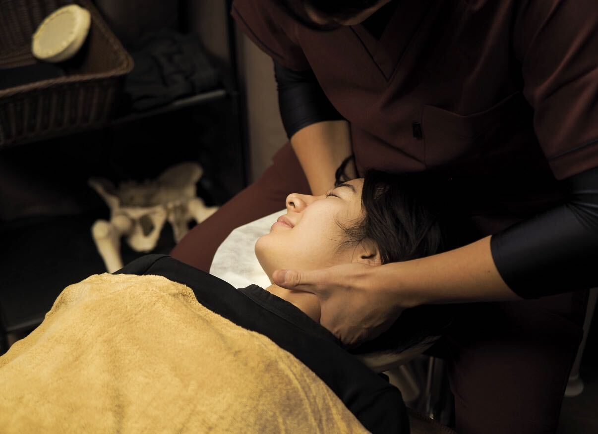

寝ても、休んでも、
疲れが抜けない。
その疲れ、当たり前になっていませんか。休んでも抜けきらないとき、原因は疲労そのものではなく、毎日の身体の使い方にあるのかもしれません。

初回体験 60分
カウンセリング＋検査＋オーダーメイド整体
- 時間平日23時まで営業／最終受付21:45。仕事帰りに間に合います
- 限定1日◯名／◯月◯日までのご予約分
- 特典ご自宅でできるインナーケアの動画をお渡し
※価格は税込です。※通常価格は当院で継続的に提供している料金です。
ひとつでも当てはまる方へ
- しっかり寝たはずなのに、朝から身体が重い
- 午後になると集中力が続かない
- どこがつらいのか、自分でもはっきり言えない
- 休日に寝だめをしても、月曜にはもう元どおり
- この状態が普通になってしまっている
休んでも抜けない疲れは、身体が「休んでいない姿勢」を続けていることで起きている場合があります。眠る時間を増やすだけでは追いつきません。
揉んでも、
またつらくなる。
マッサージで一時的に軽くなるのは、硬くなった筋肉がゆるむからです。ただ、その筋肉を硬くしている身体の使い方が変わっていなければ、数日から10日ほどで同じ場所に負担が戻っていきます。
- 施術直後負担のかかり方が変わり、身体が軽くなります。
- 約10日後デスクワークや立ち仕事のクセで、元の状態に戻り始めます。
- 続けた場合戻る幅がだんだん小さくなり、軽い状態が「普通」に近づいていきます。
国家資格者による
オーダーメイド整体。
決まったコースを全員に当てるのではなく、一人ひとりの身体を検査してから、その日に必要な施術を組み立てます。
- 一検査
姿勢と可動域をチェックし、負担の出どころを特定します。つらい場所と原因の場所は違うことがあります。
- 二オーダーメイド整体
特定した場所に合わせて調整します。強く揉みほぐす施術ではありません。
- 三インナーケア
戻りにくい状態を目指して、ご自宅でできる動きをお伝えします。通う回数を減らしていくための工程です。
朝起きたときの身体の重さが気にならない日が増えました。どこが原因かを検査して説明してもらえたのが納得できました。大田区・30代女性／デスクワーク／◯ヶ月継続 ※あくまで個人の感想であり、結果を保証するものではありません。
21時すぎでも受けられるので、残業した日でも寄れます。強く押されるのが苦手でしたが痛くありませんでした。品川区・20代男性／営業職／◯ヶ月継続 ※あくまで個人の感想であり、結果を保証するものではありません。
よくあるご質問
仕事帰りでも間に合いますか？
平日は23時まで営業、最終受付は21:45です。大森駅から徒歩8分なので、21時に退勤しても間に合います。当日のご予約も承っております／前日までにお願いしています。
ボキボキと鳴らされますか？
いいえ。当院は◯◯という手技を用いており、強い刺激は加えません。苦手な施術があれば、事前にお申しつけください。
1回でよくなりますか？
正直にお伝えすると、状態によります。長く積み重なったクセほど、戻る力も強く働きます。初回で身体の状態をご説明したうえで、必要な回数の目安をお伝えします。
どこがつらいのか、うまく説明できません
問題ありません。「なんとなく疲れている」という状態から検査で原因を絞り込むのが、カウンセリングと検査の役割です。
強引に勧誘されませんか？
当院からの提案は「今の状態に対して必要な通い方」のご説明までです。その場でお決めいただく必要はありません。
どんな服装で行けばいいですか？
仕事帰りのスーツや私服のままで大丈夫です。お着替え（無料）もご用意しています。
最初の3ヶ月・10回が目安です
戻りやすい状態を落ち着かせ、ニュートラルな身体に近づけます。
戻る間隔を広げながら、身体の使い方のクセにアプローチします。
良い状態を保つための通い方に切り替えます。
- 大森エリアの整体 相場¥◯,◯◯◯／回
- 当院 都度払い¥◯,◯◯◯／回
- 当院 10回券1回あたり ¥◯,◯◯◯
初回だけ安い店とは違い、2回目以降も通い続けられる価格にしています。3ヶ月10回を前提に設計しているためです。
※表示価格は税込です。※相場は◯年◯月時点・大森駅周辺◯店舗の調査に基づきます。
仕事帰りに、
身体をリセット。
疲れを明日に持ち越さない。まずは今の身体の状態を知るところから始めませんか。
今夜の空き枠を見る初回 ¥4,400 ／ 最終受付 21:45 お電話：000-0000-0000- 住所
- 東京都大田区◯◯ 0-0-0 ◯◯ビル◯F
- アクセス
- JR大森駅 徒歩8分
- 営業時間
- 平日 ◯◯:◯◯〜23:00（最終受付 21:45）／土日 ◯◯:◯◯〜◯◯:◯◯
- 定休日
- ◯曜